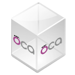

For EspoCRM
File Sharing
Adds public file-sharing records to EspoCRM with optional expiry dates, download limits, direct downloads and in-browser attachment previews.
For EspoCRM
Mass Lead Conversion
Adds a bulk action to the EspoCRM lead list so selected leads can be converted into contacts, accounts, opportunities or configured custom entity types.
For Frappe
Frappe Appointment
Provides appointment scheduling with Google Calendar conflict checks, ERPNext leave awareness, meeting-link generation and participant rescheduling.
For Frappe
PibiCal
Synchronizes Frappe or ERPNext calendar events with Nextcloud, ownCloud and other CalDAV servers, including recurring events and multiple calendars.
For Frappe
ClefinCode Chat
Adds self-hosted direct and group chat to Frappe and ERPNext, with files, voice clips, document-linked discussions and supported customer messaging channels.
For Odoo Community

CRM Lead to Task
Converts a CRM lead or opportunity into a project task while preserving its messages and attachments, with optional lead archiving and project assignment.
For Odoo Community

Partner Contact Role
Adds reusable roles and responsibilities to Odoo contacts so one person can hold several business roles beyond a single job-position field.
For Odoo Community

CRM Lead Code
Assigns a sequential reference code to Odoo leads and opportunities, making individual CRM records easier to identify and reference consistently.
For Odoo Community
Partner Deduplicate Filter
Adds filters to Odoo’s contact-deduplication tool so a cleanup can be restricted to companies, standalone contacts or contacts linked to a parent company.